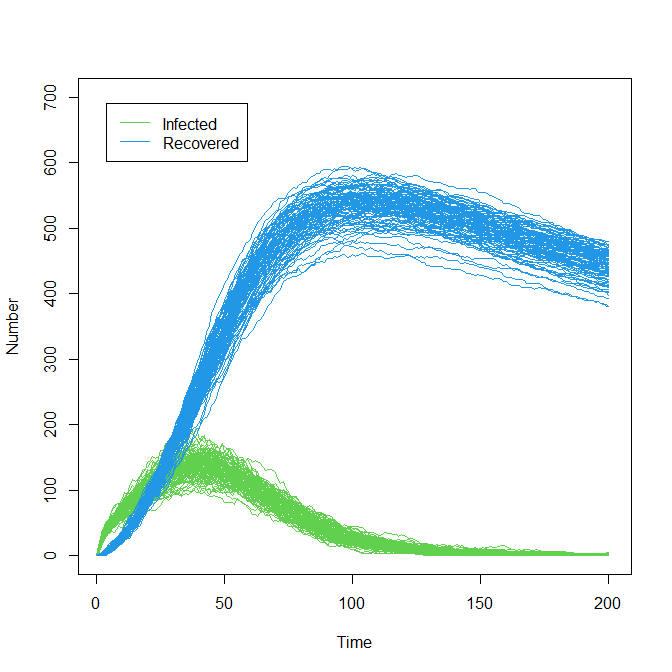

3 Introduction to the model
In this section we introduce the model that we will work with throughout our workshop. To facilitate the comparison between the deterministic and the stochastic setting, we will work with the SEIRS model which we used in Workshop 1, but this time we introduce stochasticity. The deterministic SEIRS model used in Workshop 1 was described by the following differential equations:
\[\begin{align} \frac{dS}{dt} &= b N - \frac{\beta(t)IS}{N} + \omega R -\mu S \\ \frac{dE}{dt} &= \frac{\beta(t)IS}{N} - \epsilon E - \mu E \\ \frac{dI}{dt} &= \epsilon E - \gamma I - (\mu + \alpha) I \\ \frac{dR}{dt} &= \gamma I - \omega R - \mu R \end{align}\]
where \(N\) is the total population, varying over time, and the parameters are as follows:
\(b\) is the birth rate,
\(\mu\) is the rate of death from other causes,
\(\beta(t)\) is the infection rate between each infectious and susceptible individual,
\(\epsilon\) is the rate of becoming infectious after infection,
\(\alpha\) is the rate of death from the disease,
\(\gamma\) is the recovery rate and
\(\omega\) is the rate at which immunity is lost following recovery.

Figure 3.1: SEIRS Diagram
The rate of infection between each infectious and susceptible person \(\beta(t)\) is set to be a simple linear function interpolating between points, where the points in question are \(\beta(0)=\beta_1\), \(\beta(100) = \beta(180) = \beta_2\), \(\beta(270) = \beta_3\) and where \(\beta_2 < \beta_1 < \beta_3\). This choice was made to represent an infection rate that initially drops due to external (social) measures and then raises when a more infectious variant appears. Here \(t\) is taken to measure days. Below we show a graph of the infection rate over time when \(\beta_1=0.3, \beta_2=0.1\) and \(\beta_3=0.4\):

Figure 3.2: Graph of the rate of infection between each infectious and susceptible person
get_results (which is defined in the R-script). This function assumes an initial population of 900 susceptible individuals, 100 exposed individuals, and no infectious or recovered individuals, and uses the Gillespie algorithm to generate trajectories of the model. The minimum specifications for this function are: the parameter set(s) to run the model on, a set of outputs (e.g. c("S","R")), and a set of times (e.g. c(10,100,150)) that we are interested in. The default behaviour of get_results is to run the model 100 times on the parameter set(s) provided, but more or fewer repetitions can be obtained, using the argument nreps. The function get_results returns a dataframe containing a row for each repetition at each parameter set provided, with the first nine columns showing the values of the parameters and the subsequent columns showing the requested outputs at the requested times. If raw is set to TRUE, all outputs and all times are instead returned: this is useful if we want to plot “continuous” trajectories.
As in Workshop 1, the outputs obtained with the parameter set
chosen_params <- c(
b = 1/(76*365),
mu = 1/(76*365),
beta1 = 0.214, beta2 = 0.107, beta3 = 0.428,
epsilon = 1/7,
alpha = 1/50,
gamma = 1/14,
omega = 1/365
)will be used to define the target bounds for our calibration task.
Using get_results on chosen_params
solution <- get_results(chosen_params, outs = c("I", "R"),
times = c(25, 40, 100, 200), raw = TRUE)solution such that solution[t,j,i] contains the number of individuals in the j-th compartment at time \(t\) for the i-th run of the model at chosen_params. In particular, \(t\) can take values \(1,2,...,201\), \(j\) can take values \(1,2,3,4,5\) corresponding to \(S, E, I, R, D\) (where \(D\) stands for the cumulative number of deaths occurred), and \(i\) can be \(1,2,3,...,100\).
Plotting the results for “I” and “R,” we have
plot(0:200, ylim=c(0,700), ty="n", xlab = "Time", ylab = "Number")
for(j in 3:4) for(i in 1:100) lines(0:200, solution[,j,i], col=(3:4)[j-2], lwd=0.3)
legend('topleft', legend = c('Infected', "Recovered"), lty = 1,
col = c(3,4), inset = c(0.05, 0.05))
The plot above clearly shows the stochasticity of our model. Furthermore we can also appreciate how the spread of the runs varies across the time: for example, the variance in the number of infected individuals is largest around \(t=40\) and quite small at later times.
Plotting the results for “S” also shows stochasticity:
plot(0:200, ylim=c(0,1000), ty="n", xlab = "Time", ylab = "Number", main = "Susceptibles")
for(i in 1:100) lines(0:200, solution[,1,i], col='black', lwd=0.3,
xlab = "Time", ylab = "Number", main = "Susceptibles")
If you would like, familiarise yourself with the model. Investigate how the plots change as you change the values of the parameters.